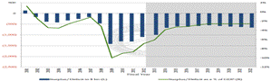
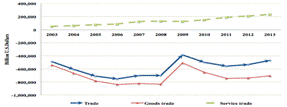
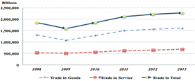

Paper Title :
The U.S. Growth Strategy From Recession and Implications For China
Abstract
Since 2009, the Obama’s Administration carried out the new growth strategy to drag the U.S. economy out of the imbalanced and sluggish growth dilemma from the recession. For the 5-year-implementation of the measures, this paper draws the framework and summarizes the main measures applied. Further, the comprehensive assessment of the strategic effects shows that the strategy has played a positive role on accelerating the economic recovery, reducing the internal and external imbalance, expanding exports, revitalizing the substantive economy and promoting the sustainable economy development. But the federal government still needs to face the challenges. Finally, this paper discusses the implications of U.S. growth strategy to China’s economy transformation, industry development, international cooperation, and sustainable and balanced growth in the post-crisis era.
Author
Ziying Cao
School of Economics and Management
Wuhan University
Wuhan, China
Marguerite Barta
School of Business, Leadership Department
Embry-Riddle Aeronautical University
Daytona Beach, Florida, United States
Paper Transcript of Paper Titled :
The U.S. Growth Strategy From Recession and Implications For China
The U.S. Growth Strategy From Recession and Implications For China
Ziying Cao
School of Economics and Management
Wuhan University
Wuhan, China
Marguerite Barta
School of Business, Leadership Department
Embry-Riddle Aeronautical University
Daytona Beach, Florida, United States
Abstract—Since 2009, the Obama’s Administration carried out the new growth strategy to drag the U.S. economy out of the imbalanced and sluggish growth dilemma from the recession. For the 5-year-implementation of the measures, this paper draws the framework and summarizes the main measures applied. Further, the comprehensive assessment of the strategic effects shows that the strategy has played a positive role on accelerating the economic recovery, reducing the internal and external imbalance, expanding exports, revitalizing the substantive economy and promoting the sustainable economy development. But the federal government still needs to face the challenges. Finally, this paper discusses the implications of U.S. growth strategy to China’s economy transformation, industry development, international cooperation, and sustainable and balanced growth in the post-crisis era.
Keywords-New strategy; Sustainable and balanced growth; External balance; Internal balance; Innovation growth; Energy strategy
Introduction
The U.S. economy has become increasingly imbalanced since the 1990s. In 2008, the saving rate of United States was rising to 70.1% with the consumption rate falling to 14.5%. And international industry transfers have contributed to the U.S. substantive economy shrinking. The ratio of the manufacturing sector in GDP has dropped from the peak of 28.3% in 1953 to 11.2% in 2009. In the crisis period, the weak consumption expenditure and manufacturing shrinking caused seriously insufficient power for its economic recovery. On the other hand, the "debt economic growth mode" of U.S. economy in the past years resulted in large fiscal deficit and foreign debt. In the fiscal year 2009, the U.S. fiscal deficit reached as much as $1.41 trillion, with the federal debt scale reaching more than $3.3 trillion. The current-account deficit was as high as $376.5 billion, which accounted for 2.7% of GDP in 2009.
Facing the financial crisis, which dragged the U.S. economy into the dilemma of imbalanced and sluggish growth, as well as the challenge of global climate change, the U.S. President Barack Obama put forward the "Framework of Sustainable and Balanced Development Initiative” before the G20 Summit 2009 in Pittsburgh and implemented the sustainable and balanced growth strategy and related measures in United States.
With 5-year-implementation of the new strategy, has the U.S. macro-economy got out of recession? Have the internal and external imbalance been improved? How about the sustainable growth? What kind of challenge does U.S. government still need to face? As the second-largest economy in the world, China now is also facing the issues of sustainable and balanced economic growth. The question for China is whether China can get enlightenments from the U.S. strategy and measures for government policies and cooperation with other nations? This paper is going to suggest the answers.
Starting from the framework of Obama’s new strategy and main measures, the paper makes an overall assessment of the strategic effects on accelerating economic recovery, reducing the fiscal deficit, expanding exports, the revitalizing of the substantive economy, saving energy and reducing emissions, etc. Based on the analysis of current situation of China’s economy, this paper finally discusses the enlightenment of the U.S. strategy and gives recommendations to China.
Strategic Framework, Main Policies and Measures
Strategic Framework
With the goal of sustainable and balanced economic growth, Obama’s new strategy framework contains four economic parts (See Figure 1):
(1)"Internal Balance Strategy", aiming at reducing the deficit; (2)"Reindustrialization Strategy", referring to the revitalization of the substantive economy; (3)"Export Expansion Strategy", to balance the external economy through promoting export; (4)"Innovation and Green Growth Strategy", to develop clean energy technologies and industries.
Figure1. The Framework of U.S. New Strategy of Growth
Source: made by author
Main Policies and Measures
(1) Accelerating Recovery and Internal Balance
The Obama’s Administration has adopted a series of expansionary fiscal policies to accelerate the economy to recover from the financial crisis, such as the release of The Economic Stimulus Act of 2008, American Recovery and Reinvestment Act of 2009, etc., costing more than $3 trillion in total. The U.S. government also implemented four rounds of Quantitative Easing Monetary Policies(QE) since November 2008.
However, with the increasingly serious problem of fiscal cliff along with the implementation of the stimulus measures, the federal government took $2.5 trillion deficit-reduction measures on tax increases and expenditure cuts in the past two years, including the Automatic Deficit Reduction Mechanism 2013 as well as the structural adjustment of fiscal expenditure, and reducing military and government administrative expenses, to cut the budget deficits.
(2)Promoting Exports and FTA Negotiations
To alleviate the huge U.S. trade deficit, Obama launched a government-wide National Export Strategy through the National Export Initiative (NEI) in 2010, which aims at doubling the U.S. export to $3.14 trillion and creating two million jobs in 2014. Assisting the private sector, especially the Small and Medium-sized Enterprises to export is the first priority to realize the target. For example, the U.S. International Trade Administration dispatched 135 trade delegations to 55 countries, creating more than $22 billion export earnings directly. In 2012, the export-import bank provided for $6.1 billion financial support to 3300 small enterprises.
Negotiation of “Free Trade Agreement" (FTA) is another essential component of the United States to expand exports. So far, the United States government has signed 14 bilateral FTA with 20 countries. And three multilateral FTA are ongoing: " Trans-Pacific Partnership Agreement " (TPP), " Transatlantic Trade and Investment Partnership" (TTIP), and "Trade In Services Agreement (TiSA)". The U.S. government expects to strengthen world-wide cooperation to remove trade barriers for American companies through "high standard and wide range" agreements covering all the competitive industries of U.S., such as finance, education, healthcare, media and so on. At the same time, The U.S. government continued promoting "the United States’ Middle East and North Africa Trade and Investment Partnership (MENA TIP) ", "the US-ASEAN Trade and Investment Framework Agreement (TIFA)" and participating in "Indonesia APEC Summit 2013" to deepen cooperation of trade and investment with African and Asian countries. Thus, through the worldwide FTA negotiations covering America, Europe, Africa, and Asia, the U.S. government has been devoting efforts to open the global market for the domestic companies.
(3) Reviving the Substantive Economy
The U.S. manufacturing industry is considered as the base of the substantive economy and the engine of the innovation, from where 90% of the patents and 70% of the private sector R&D activities come from. As a result, the U.S. government emphasized the revitalization of "Made in USA" as the core of the revitalization of the substantive economy. The U.S. President Barack Obama signed the "U.S. Manufacturing Enhancement Act" on August 11, 2010, temporarily cancelling or cutting the tariff on the imported raw materials for the U.S. manufacturing companies to strengthen the manufacturing competitiveness. Also, the government increased fiscal expenditure on transportation infrastructure construction and energy and improvement of the supply chains. It also focused on encouraging development of 21st century strategic emerging industries. The related measures include tax cuts and fiscal spending on promoting the technology innovation of domestic enterprises and stimulate the famous worldwide multinational companies back to the United States. In addition, many government agencies, market places and partnership such as Advanced Manufacturing National Program Office (AMNPO), the National Innovation Marketplace (NIM) and the Hollings Manufacturing Extension Partnership (MEP) have been established to improve the coordination of manufacturing policy across the federal government.
The coordinated development of agriculture and services is also considered crucial to the balanced growth of U.S. The importance of the production of high quality and standards and improvement of the global supply chain of agricultural products was clearly stated in the President’s 2013 Trade Policy Agenda. And, as tourism has become the most potential service industry, the U.S. government began to implement the "National Tourism Strategy" in 2011 with the goal of attracting 100 million visitors every year to the U.S. by 2021.
(4) Advancing Innovation and New Deal of Green Growth
The Obama’s administration, the National Economic Council and the Office for Information Technology Policy issued “A Strategy For American Innovation” jointly on September 21, 2009 to clarify for the development of the clean energy technologies and industries as the core of high-speed to sustain economic growth of U.S.. Under the guidance of the innovation strategy, many measures have been taken: a) The investment on clean energy was intensified. The ARRA2009 stipulates that the government will spend $150 billion on the R&D of new energy. In fact, the data from the US Department of Energy shows that $600 billion has been put into the shale gas exploration and production. b) The U.S. government advanced the standards of clean energy and accelerated the transformation of technical achievements into the production. Currently there are more than 25 incentive policies ongoing. c) The American Clean Energy and Security Act of 2009 (ACES) has renewed the renewable energy development framework of legislation. The government set up a "Clean Technology Fund（CTF）" to promote clean utilization of traditional fossil energy. It also advanced a series of measures such as reform and enforcement of intellectual property rights, wireless plan, patent reform agenda, and promote the K-12 education, and so on, to accelerate innovation growth.
In the meantime, with the United States being a global power of energy consumption and greenhouse gas emissions, the Obama administration proposed the "Green New Deal" to fight against the climate change. The President’s Climate Action Plan was released on June 25, 2013，aiming at cutting carbon emissions through sustained and responsible action on climate change. It’s stated that the President remains firmly committed to reduce U.S. greenhouse gas emissions in the range of 17 percent below 2005 levels by 2020, and will reduce carbon pollution by at least 3 billion metric tons cumulatively by 2030. Externally, The U.S. has made the leading efforts in the international climate negotiations during the past five years, including the actions in the Conference of the United Nations Framework Convention on Climate Change (UNFCCC) and APEC negotiation of which the agreement of environmental products has gotten a breakthrough in 2012, agreeing that the tariffs on the 24 environment related products should be reduced to 5% or even lower in 2015.
The Assessment of the strategic effects
Stable Macro-economic Recovery
After the implementation of the new strategy, the U.S. economy keeps growing in a moderate rate 2.25% since 2009 (See Figure 2). The Peterson Institute forecasts this rate would accelerate to 2.9% and 3.2% in 2014 and 2015. Personal Income increased steadily by 13.1% in last 5 years, while both of the DPI and the PCE has increased by 0.15% since April 2013. The market is also under the recovery, after hitting the bottom in 2012, the U.S. housing market kept growing on both quantity and price in 2013 to the highest level since November 2009. The Consumer Confidence Index has improved significantly to pre-crisis levels, reaching 78.1. Employment conditions continued to be better (See Figure 3). It is predicted by Peterson Institute that the unemployment rate would fall to 6.7% and 6.2% in 2014 and 2015.
Figure 2. GDP growth rate: 2008~2013
Source: calculated the data from U.S.BEA.
News Release: Gross Domestic Product
http://www.bea.gov/national/index.htm#gdp
Figure. 3 Unemployment Rate: 2004 Jan.~2014 Jan.
Source: U.S.BLS http://data.bls.gov/timeseries/LNS14000000
Improved Fiscal Deficit and imbalance of trade
With the "two-way fiscal adjusting measures”, the share of federal deficit in GDP reduced from 10.1% in 2009 to 7% i2012(See Figure 4). According to the U.S. Treasury Department in August 2013, the budget deficit is projected to decline to 4.5 % of GDP in fiscal year 2014, to dip below 3% of GDP by fiscal year 2017, and realize balance in 2019, with the national debt-to-GDP ratio falling to 73% in 2023.

Figure 4. the Federal deficit of GDP from 2001~2022
Note: the data from 2013-2022 are estimated
- Source: The U.S. Treasury Department:Office of Debt Management: Fiscal Year 2013 Q1 Report
- As to the trade deficit, (See Figure 5), total trade deficit and goods trade deficit was getting better in last 4 years, while the service trade kept increasing surpluses. If we calculate the means of deficit of 2 phase: 2003~2009 and 2010~2013, the results illustrates that after the implementation of NEI, the mean of aggregate deficit in phase 2 decreased 20.3% to 515.6 billion dollars from the previous phase. However, it mainly came from the 107% increase of service trade surplus mean, rather than the 0.6% decrease of goods trade deficit mean.
- 
Figure.5 Trade Deficit/Surplus 2003~2013: Total, Goods and Service
Data Source: U.S. Census Bureau: FT900: U.S. International Trade in Goods and Services http://www.census.gov/foreign-trade/Press-Release/ft900_index.html#2000
Expansion of Exports and Related Jobs
NEI measures have remarkable effects on America's export and employment growth. The data from ITA shows that exports of goods and services has increase in 44% from 2009 to 2013, with the goods trade growing 48.7% and service trade growing 30.1%( See Figure 6).

Figure 6. Export growth: 2008~2013
Data Source: U.S. Census Bureau: FT900: U.S. International Trade in Goods and Services
http://www.census.gov/foreign-trade/Press-Release/ft900_index.html#2000
The liberalization of trade and investment is crucial to the U.S. export. The American exports to the FTA countries accounted for 46.3% of its total exports in 2013. Especially the markets of Columbia, Panama and South Korea expanded very fast under the FTAs between U.S. and those 3 countries which were forced into effect in 2012. Last year, the American exports to Columbia rose by 13.7% and it has become the second largest importer of American agricultural products in South America. The exports of transportation equipment to South Korea increased 24%. Even the multilateral trade negotiations of TPP is still on going, but the goods exports to the 12 members has reached $6.98 trillion, as 43.9% of its total exports.
With the export expansion, jobs were increasingly created by both goods and service trade(See Figure 7). The job support from goods trade is much stronger than the serve trade. Meanwhile, data also shows every export-related job contributed more and more value, which mean the productivity and export price were both growing.
Figure 7. Jobs supported by Export and Export created by Each Job: Total, Goods and Service
Data source: ITA: Jobs Supported by Exports 2013: An Update
http://www.trade.gov/mas/ian/build/groups/public/%40tg_ian/documents/webcontent/tg_ian_005313.pdf
Revitalization of U.S. Substantive Economy
The U.S. manufacturing industry was gradually growing. The. U.S. Department of Commerce, in 2012, indicates that the U.S. manufacturing industry had consecutive growth for 31 months—best in the past 25 years. Meanwhile, the knowledge-intensive industry which directly resulted in 34.8% of GDP created 27.1 million jobs. Data from U.S. Institute for Supply Management（ISM）indicates that since September 2009 most of the PMI (Purchasing Managers' Index) was above 50%, and the Diffusion Index was above 42.8%, showing the positive activities of businesses and economy. The Manufacturers Alliance（MAPI）predicted that the annual rate of the manufacturing production will be up to 2.2%, 3.2% and 4.1% in 2013-2015 respectively.
The International Market Share and the Trade Competitiveness Index (TC) are the commonly used indicators of measuring the international competitiveness. Data from WTO International Trade Statistics Database shows that, in 2012 the U.S. is still the largest service trade country and second largest goods trade country in the world. It occupied 10.4% of the world agricultural products market. The export of major manufacturing categories, such as chemicals, food, office equipment, telecommunications equipment and automation, ranked third, although the fuel and related products exports share only reached 4% of the world market, but the export value has risen by 68% from 2011. The export share of service sectors, such as transportation, tourism, communications, telecommunications, insurance, financial and franchising remained the highest.
2012 TC Index of U.S. Competitive Sectors
Goods Trade |
Cotton |
Grain |
Ore |
Plastics and |
TC |
0.75 |
0.72 |
0.27 |
0.14 |
Goods |
Transportation Equipment |
Ships |
Aircraft and Components |
|
TC |
0.3 |
0.3 |
0.62 |
|
Service |
Tourism |
Rental |
Education |
Finance |
TC |
0.2 |
0.52 |
0.61 |
0.64 |
Service |
Franchising |
Telecommunication |
Other professional service* |
|
TC |
0.51 |
0.27 |
0.33 |
|
Note：*including advertising, accounting, engineering, law, medical care and so on. TC=(Xi-Mi)/ (Xi+Mi)， Xi and Mi means the value of exports and imports in a period(generally 1 year)，ranging from-1 to 1. TC>0 means it is competitive, the closer to 1，the stronger competitive it is. TC<0 means it is not competitive, the closer to -1, the stronger disadvantageous it is .
Data source: Calculated by the HS statistics（98 categories）in the UN Monthly COMTRADE, only listing main representative products with strong competitiveness.
Table 1 shows the TC of the main export products and services in 2012. It illustrates that U.S. is still in the leading position of the world with strong competitiveness especially in the advanced manufacturing and knowledge-intensive sectors. The Wilson Center reported in March 2013 also indicates that the United States has obvious advantage in many areas such as aerospace, medical, synthetic biology, advanced materials and rapid prototyping manufacturing, etc. So it is possible that the new wave of innovation on the advanced manufacturing areas, including the technology of complete coverage of the wireless network, and wide use of cloud computing will appear in the United States in the near future.
Achievement on Energy Independency and Green Growth
The technology breakthrough of the shale gas has greatly improved the domestic supply of crude oil in the United States. Current data from Energy Information Administration（EIA）shows that the domestic crude oil output has increased by 40% since 2008. The American oil production has reached as much as 7.3 million barrels a day in May 2013, which is the first time for exceeding its imports of 7.26 million barrels, and will increase to 13.2 million barrels per day in 2014. The United States may surpass Russia, becoming the largest oil producer in OPEC countries. Furthermore, America's energy exports increased by 6% in 2012 which has become one of the most powerful export products to cut the huge U.S. trade deficit.
The demand for crude oil fell further in the United States, partly due to the pressure of new fuel efficiency standards released by Obama administration and the cheaper price of gas. The U.S. crude oil imports dropped by 15.1% in June 2013 and reduced 1.37 million barrels per day comparing to the same period last year, and became less dependent on oil imports from Middle East. EIA also predicted that America's oil imports from the Middle East would fall from 1.9 million barrels a day in 2011 to 0.1 million barrels by 2035.
The energy efficiency has also been improved. Over the past five years, the average miles per gallon of a new car and light truck have increased by 19%. And the laboratory average nominal per gallon of fuel mileage will increase from 27.6 in 2011 miles to 54.5 miles by 2025.
With the measures of Green Growth Strategy, the "Inventory of U.S. Greenhouse Gas Emissions and Sinks" released by the U.S. Environmental Protection Agency in April 2013 shows that in 2011, U.S. greenhouse gas emissions totaled 6,702 million metric tons CO2, and the U.S. emissions decreased by 1.6% from 2010 to 2011.Furthermore the greenhouse gas emissions in 2011 were 6.9% below 2005 levels .
It is clear that the United States is approaching energy independence through innovation of clean energy technologies as the core of Green Growth Strategy, and gradually achieving strategic transformation and sustainable development.
Challenges
After five year-implement of the U.S. growth strategy, from the analysis above, we can come to the conclusion that the policies and measures have played positive roles in the recovery of U.S. economy. However, for the long-term goal of “strong, sustainable and balanced economy”, there are still some big challenges the U.S. government should face:
Re-balance challenges
To the internal fiscal imbalance, the fiscal cliff problem has not been fundamentally solved. Since the Obama Administration insisted on health-care reform, the government hit the debt ceiling time and time again. In June 2013, the federal debt was over $16.7 trillion, accounting for 73% of GDP.
To the external imbalance, U.S. is still in a severe situation. In 2013, while the service trade surplus increased 53.6%, the deficit of goods trade even deteriorated 8.1% from 2010 , Thus, the U.S government should put more efforts to turn the tide.
Export-expansion challenges
NEI aims at doubling the U.S. export to $3.14 trillion. But the growth rate of the U.S. export was slower and slower in last 4 years, from 16.8% down to 2.8%. Only the export increase 37.2%, the target of NEI can be realized. Obviously, it is impossible.
With the liberalization arrangement of trade and investment, American companies export goods and services to over 70 countries and districts. But as the traditional market, NAFTA and EU were still the main partners, accounting for nearly 50% of the total U.S. exports in 2013. This share is even over 70% with the TPP partners. At the same time, the export share to China, Japan , South Korea and Singapore was only 7.7%, 4.1%, 2.6% and 1.9%. It means strategic effect on exploring new market in Asia is not strong enough. What’s more, many transition countries, such as China and Russia, are running into the structural reforming stage so that they will gradually slow the GDP growth. It will put pressure on the continuous and fast expansion of U.S. exports.
Economic-transformation challenges
Table 2 shows the importance of Personal Consumption Expenditure (PCE) and Export in GDP growth. The contribution rates indicate that PCE played a much stronger role in U.S. economy development than export. The contribution of the export, especially the contribution of the goods export fell sharply in the last 4 years. What’s more, the share of PCE to GDP dropped a little from 70% in 2011 to 68.4% and the share of export to GDP stayed on 13.5% in the last 3years. That’s to say, PCE is still the absolute main motion of GDP. As the macro-economy gradually recovers, the increasing personal income will stimulate the stronger consuming demand so that it is more difficult to get success in the transformation of the economic growth mode.
Share and Contribution to GDP: PCE and Export
Year |
2010 |
2011 |
2012 |
2013 |
GDP annual growth rate |
2.5% |
1.8% |
2.8% |
1.9% |
Contribution of PCE to |
1.34% |
1.74% |
1.52% |
1.37% |
Contribution of total export to |
1.28% |
0.89% |
0.48% |
0.38% |
Contribution of goods export to |
1.08% |
0.63% |
0.36% |
0.24% |
Export/GDP |
11.9% |
13.5% |
13.5% |
13.5% |
PCE/GDP |
67.9% |
70% |
68.6% |
68.4% |
Data source: BEA: Gross Domestic Product, 4th quarter and annual 2013 (advance estimate)
http://www.bea.gov/newsreleases/national/gdp/2014/gdp4q13_adv.htm
Implications and Recommendations to China
As the second-largest economy in the world, China now is also facing the issues of sustainable and balanced economic growth, such as the transforming the economic growth mode, balancing international accounts, obtaining sustainable development, and so on. As to the positive effects of the U.S. sustainable and balanced growth strategy, China can get some enlightenments.
Enhance the pull function of consumption in China’s economy
Investment, consumption and foreign trade are the essential parts of economy growth. Any country shouldn’t excessively rely on any certain one. The U.S. economy growth mode, which has been relying too much on consumption, is imbalanced and unsustainable, so the U.S. government reformed to enhance the pull function of investment and export. On the contrary, as "the troika" of China’s economy, the contribution rate of foreign trade is much higher than others. The dependence degree of China's import and export trade still reached 50.4% in the first half of the year 2013. This trade-driven mode is not balanced and sustainable either, which has caused plenty of external risks and constraints to the long-term development. As to the investment, 4 trillion RMB stimulus investment of government created the miracle of growth in times of crisis, but many aggravating problems have also arisen, such as the real estate price bubble, the local debt, overcapacity, etc. Meanwhile power of consumption is insufficient. From1978 to 2011, Chinese real residents' consumption per capita rose from $168 to $1911 (2011price), but its share of GDP decreased from 48.4% to 34.4%, which was less than 1/20 of that of the U.S.. Therefore, China must strengthen the pull effects of consumption, accelerating the transformation from "exports & investment-driven economy" to "consumption-driven economy".
Firstly, China should put the improvement of the residents' income and distribution institute as the first priority. Data shows that, China's real GDP per capita in 2012 was $6,012, less than 1/8 of America's, which was $49,880. The low level of income and inequality of income distribution fundamentally have restricted the expansion of consumption and private investment demand in China. Secondly, China needs to create a better consuming environment by implementing a series of measures such as improving the market regulation system to protect the rights of consumers, strengthening the infrastructure construction on transportation, communication, vigorously developing e-commerce to explore more consuming channels, and so on. Thirdly, China must keep reforming the medical treatment and social security to relieve the worries of the residents' consumption. Additionally, China needs to further develop the rural consumption market.
Promote the Innovation-driven Growth of China's Strategic Industry
Strategic emerging industries will be the engine of the sustained economic development in the 21st century. The competition in this field will also be the core of international competition in the future. So, the U.S. reviving strategy of "Made in U.S." which is very prospective, focuses on developing the "innovation-driven strategic industry" to occupy commanding elevation of the world competition.
For China, the government has attached great importance to developing the strategic emerging industries too. The "National Strategic Emerging Industry Developing Plan in the 12th Five-year Period" issued by the State Council in July 2012 identified seven strategic emerging industries, including the new generation of information technology, biology, high-end equipment manufacturing, and so on. It also clarified the 24 key directions and 20 major projects. China has obtained many achievements since 2012. The investment and output of strategic emerging industries in many provinces kept growing with over 20% growth, even significantly higher than average growth rate of the manufacturing industry. They play the increasingly strong leading role in industry upgrading.
However, many problems such as lacking of independent intellectual property rights and core technology, redundant construction of the low-end industrial chain, lack of brand products, and so on, still very seriously affect the development of the strategic industries in China. Photovoltaic (PV) industry and LED industry are always facing the protectionism from European and American countries. Therefore, China’s strategic emerging industries must be driven by "innovation", which is also the only solution of its long term development.
First of all, the government should coordinate the investment on the strategic emerging industries to avoid redundant construction. Second, the government must continue in intensifying national policy support, improve the financing channels for small and medium-sized enterprises who should be regarded as the main body of technological innovation, and help them speed up the transformation of innovation achievements. Third, China should increase spending on R&D, emphasize on the combination of "education, research and production", and improve the protection system of the intellectual property rights (IPR) to protect the innovation of enterprises. Fourth, enterprises need to consider innovation as the basis of core competitive ability and put more efforts on innovation and the ownership of independent IPR. They should establish more competitive brands and protect the IPR actively. Additionally, some powerful enterprises can explore the international market by FDI (foreign direct investment) which would be helpful to circumvent trade barriers.
Promote Structural Balanced Trade Growth of China
External balance is crucial to any sustainable economy, not only U.S., but also China. Due to the open polices since 1978, increasing foreign trade and FDI made both of the current account and capital account of China surplus for many years. Although China’s international payments gradually tended to be overall balanced since 2009, the capital account became deficit for the first time in 2012, while the foreign trade surplus is still as high as $213.8 billion at the same time, which keeps China facing the high pressure on RMB appreciation and constant trade friction with many partners.
Different to U.S. overall trade deficit, China’s external imbalance lies in the imbalanced structure of foreign trade: (a) imbalance between trade of goods and service. Data shows that the goods trade surplus valued at $231 billion is much higher than service trade deficit peaked at $89.6 billion in 2012, in which transportation, tourism, insurance, proprietary technology are the primary deficit industries. (b) the imbalance between import and export of goods (as the surplus data shows), which is caused by two main reasons: one is that the FDI enterprises from Europe, the U.S. and east Asian economies transferred the labor-intensive process of manufacturing to China so that it looks like China has exported large of high-tech products. For example, 40% of the total imports of the U.S. in 2012 were from China, most of which were the iPhones processed in China. Another reason is that the traditional calculation method of trade exaggerated the scale of China's trade surplus.
Therefore, to achieve the structural balanced growth of trade is the main target for China. It is important that China pay more attention to enhancing the export quality, improving the terms of trade, accelerating industrial upgrading, developing strategic emerging industries to stimulate exports, improving the position in the international industrial chain, as well as increasing the import of high-tech products. Second, China industries need to put more emphasis towards strengthening the research on and actively use the more scientific methods to measure and reflect the status of the trade imbalance. Third, China would be wise to learn from the United States and other developed countries that vigorously develop modern service industry, intensify the service industry structure adjustment, and promote high value-added services such as information, insurance, financial and consulting, which are far behind the developed countries. Fourth, the Chinese government should accelerate the integration negotiations and provide strong support for the competitive enterprises to invest abroad.
Enhance the "Energy Strategy" for the Green Growth of China
China's rapid growth is based on the "3 High & 1 Low mode" (high input, high consumption, high pollution and low benefit). This has brought a lot of problems. First, the dependence on oil imports makes China more vulnerable to the price fluctuations and supply risk. The U.S. energy information administration (EIA) announced in October 2013 that China has become the world's largest net importer of oil and the dependence degree has increased to 57%. According to forecast of Wood Mackenzie, China will spend $500 billion a year on importing oil after 2020, which is even more than America’s peak spending on oil imports of $335 billion. Second, the EU and the United States are constantly increasing the environmental standards, which make it more difficult for Chinese enterprises to expand market in the developed countries. Third, China has become as large in energy consumption and emission power as the U.S.. The serious environmental pollution has threatened the survival of Chinese. As President Obama said in the President’s Climate Action Plan, environmental protection should be equally important as the economic growth. Facing the various problems, it is urgent for China to thoroughly change the "3 High & 1 Low growth Mode".
The U.S. energy strategy and measures such as providing policy support, developing new clean energy standard and establishing Clean Technology Fund and so on have some reference value to China. China should enhance "energy strategy" to achieve energy independence and green growth.
First of all, the technical innovation is only solution for China to catch up with the developed countries on development of new energies and utilization of traditional energies. So Chinese government should expand the R&D spending, encourage more and more participation from businesses, and emphasize the role of mid-west area of China in accelerating development of energy industry. Second, the Chinese government must constantly revise domestic standards according to the change of international standards, and accelerate the enterprises evolution in the free market rather than administrative internals. Third, the current Chinese resident consumption mode is changing from necessity-oriented consumption to development-oriented consumption so that the carbon emissions of household energy consumption are increasing year by year. So Advocating of "low-carbon life style" is very important for China. Fourth, accelerate the construction of emission permits trade of carbon, and promote the energy cooperation all over the world.
Deepen the International Economic Cooperation in the East-Asia
East-Asia is the most dynamic and potential region in the world, the importance of which has been testified by the "Return to the Asia-Pacific Strategy" of U.S. China. And it is very important to China too. Data released by the National Bureau of Statistics of China, in 2012, five out of top ten trade partners of China are east-Asian countries and districts (ASEAN, Hong Kong, Japan, South Korea and Taiwan), accounting for 37.6% of the total amount of China's foreign trade. Especially, the cooperation between China and ASEAN is developing very rapidly. Total trade value between China and ASEAN increased 10.2% from 2011 and reached $400.09 billion in 2012, accounting for 10.35% of China's foreign trade. ASEAN has become the third largest trade partner of China's for four consecutive years. Furthermore, the “10+3 Cooperation Mechanism” among ASEAN and China, Japan and South Korea, which was established in 1997 to cope with the financial crisis jointly, has built a relatively complete platform in East-Asia. The cooperation process has established 17 ministerial meeting mechanisms and 24 pragmatic cooperation, built a regional foreign exchange reserve of $240 billion and nearly 800,000 tons of rice emergency reserve which play very crucial roles in the cooperation in east-Asian area.
As the largest Asian country, the cooperation with east-Asian countries should play the pivot role in China’s international cooperation. China should continue to promote the monetary cooperation with the east-Asian countries and jointly resist the obvious spillover effect of "Quantitative Easing Policy" of developed countries on the interest rate and exchange rate, while expanding the amount of currency swap and accelerate the internationalization of the RMB. Furthermore, China should also strengthen the mutual trust with ASEAN under the "China-ASEAN 2+7 Cooperation Framework" , promote RCEP (Regional Comprehensive Economic Partnership) negotiation, push the liberalization of trade and investment, and enhance the comprehensive cooperation on politic, economy, security, humanities, science and t technology.
At the same time, the China-US economic relationship is one of the most important bilateral relationships in the world. Although there are many differences between China and the U.S. on economic development, the American sustainable and balanced growth strategy also have created many mutual benefits for both sides. For example, the "NEI of U.S." and "Five-year Plan of China" have formed a complementary opportunity for the expansion of U.S. exports and increase of China imports, which is helpful to the external balanced growth for the two countries. Meanwhile the liberalization of trade and service promoted by U.S. through FTA will also give China chance to achieve the industrial upgrading and transforming benefits from the cooperation with the U.S. companies on tourism, education and financial services to achieve balance for both. The American technology breakthrough on clean energy and related fields can help China to achieve "Green Growth" as well.
Therefore, it is important for both China and U.S. government to keep the China-US strategic and economic dialogue mechanism on-going, and develop a comprehensive and mutually beneficial economic partnership based on mutual respect.
Conclusion
Balanced and sustainable growth is an increasing concern in the world today. As the largest and second largest economies, both of the U.S. and China should take the responsibility to promote the fast, healthy and sustainable development of the world economy. The U.S. growth strategy, with comprehensive policies and measures, has accelerated America’s recovery, relieved the internal and external imbalance, expanding exports, revitalizing the substantive economy and promoting the sustainable economy development. Although the U.S. government is still facing the challenges of reducing the fiscal deficit and trade deficit, realizing of NEI target and continuous export expansion and transforming the economy growth model, the overall effect of the Obama Administration’s growth strategy is very positive.
Meanwhile, many policies and measures under the U.S. growth strategy have implications for China. To realize the “balanced and sustainable growth”, China should speed up the overall transformation, strengthen the innovation, rebalance the trade growth and intensify international cooperation.
Acknowledgyment
I wish to express thanks to Professor Zhang Bin from School of Economics and Management of Wuhan University for assistance with this research.
References
Pudong economic research center of U.S., Wuhan University Institute of Canada and the United States, The Global Economic Pattern and China-US economic and trade relations in the Post-crisis Period, the Shanghai Academy of Social Sciences Publishing House, June 2011.
Meng Xia, Asia-pacific Regional Economic Cooperation and Development Report 2012, Higher Education Publishing House, September 2012.
Norman, Donald A., MAPI Business Outlook: Most Indexes Show Marked Improvement. October 10, 2013.
- https://www.mapi.net/research/publications/mapi-business-outlook-most-indexes-show-marked-improvement
U.S.-China 2022:U.S.-China Economic Relations in the next Ten Years. China-US Exchange Foundation. June 4th,2013.
Bank of America Merrill Lynch research report：The Revitalization of U.S. Manufacturing Industry.March,2012.
- http://corp.bankofamerica.com
National Energy Administration of China. The change of world energy market calls for innovation and cooperation. 2013-05-13.
- http://www.nea.gov.cn/2013-05/13/c_132378807.htm
- AUTHORS PROFILES
Professor Ziying Cao worked as a professor at Wuchang University of Science and Technology (WUT), Wuhan, China for 7 years, and got into her Doctoral Student in Economics and Management at Wuhan University last year. She has served as visiting professor in the School of Business at Dixie State University (DSU), St George, Utah, USA and was extremely well-received as a superior teacher while at DSU. She is very fluent in both Mandarin and English languages. She is an experienced and well respected educator and researcher with years of university teaching experience. She received the “Outstanding Prize” Award in the Third Teaching Contest in WUT. She received her Masters of Economics degree from Zhongnan University of Economy and Law, as well as a Bachelor degree in Economics from Wuhan Textile University. Ziying Cao’s current academic studies are concentrated in Economics and Export Strategies of China and the United States.
.
Dr. Marguerite Barta is a professor who teaches courses in business, management, electronic commerce, operations management, organizational behavior, human resource management, reverse logistics, and consumer behavior. She is an accomplished educator with years in the traditional brick and mortar classroom and in the online click and mortar classroom. She holds a PhD in Organizational Management with a minor in E-commerce from Capella University in Minneapolis Minnesota and she has two graduate degrees, one in Managerial Leadership and one in Electronic Commerce from National Louis University in Chicago, Illinois.
Dr. Barta’s current academic studies are concentrated in the science of e-business, business, management, economics, e-commerce, e-learning and Cybergogy.
The research report of Bank of America Merrill Lynch：The Revitalization of U.S. Manufacturing Industry.March,2012.http://corp.bankofamerica.com
BEA. Table A-US International Transactions(Summary). http://www.bea.gov/International/modern.htm
U.S. Free Trade Agreements . Export.gov. http://export.gov/FTA/index.asp
Fact Sheet: Build It Here, Sell It Everywhere: Why Manufacturing Matters. US Department of Commerce, May 9, 2012. http://www.commerce.gov/news/fact-sheets/2012/05/09/fact-sheet-build-it-here-sell-it-everywhere-why-manufacturing-matters
Fact Sheet: National Export Initiative. U.S. Department Of Commerce. May 24, 2013
The change of world energy market calls for innovation and cooperation. National Energy Administration of China. 2013-05-13 http://www.nea.gov.cn/2013-05/13/c_132378807.htm
President's Climate Action Plan. Executive Office of the President. June, 2013. http://zh.scribd.com/doc/149876798/President-s-Climate-Action-Plan
Office of Macroeconomic Analysis. Profile of the Economy. August 8, 2013
Manufacturing Data. ISM. http://www.ism.ws/news/content.cfm?ItemNumber=13130&navItemNumber=22307
Donald A. Norman. MAPI Business Outlook: Most Indexes Show Marked Improvement. October 10, 2013. https://www.mapi.net/research/publications/mapi-business-outlook-most-indexes-show-marked-improvement
This part of the data was sorted according to the data released by the energy agency (EIA) in 2013. Comparing to last year, in June 2013, the United States imports from Saudi Arabia crude oil fell 1.7%, imports from the Persian gulf oil fell 20.2%, imports from the OPEC fell 17.3%, to 3.62 million barrels a day.
China Has Become a new generation of oil consumption power. The Financial Times. 2013-10-17
http://www.ftchinese.com/story/001052956
INVENTORY OF U.S. GREENHOUSE GAS EMISSIONS AND SINKS: 1990-2011. US Environmental Protection Agency .April 2013. http://www.epa.gov/climatechange/ghgemissions/usinventoryreport.html
Congressional Budget Office. The 2013 Long-Term Budget Outlook. September 17, 2013. http://www.cbo.gov/publication/44521
The General Administration of Customs: China's foreign trade reduced dependence to developed markets. Ministry of commerce of People’s Republic of China, 2013-10-14 http://tzswj.mofcom.gov.cn/article/f/201310/20131000347067.shtml
US-China 2022:U.S.-China Economic Relations in the next Ten Years. China-US Exchange Foundation. June 4th,2013
US-China 2022:U.S.-China Economic Relations in the next Ten Years. China-US Exchange Foundation. June 4th,2013
For example, in 2010 the United States issued "double reverse surveys” frequently towards China’s strategic emerging industries such as PV and application level wind tower which China is competitive. The U.S. also launched "337 investigation" on electronic products, machinery manufacturing and other high-tech products. Meanwhile, the U.S. also increased the difficulty of mergers and acquisitions for foreign enterprises to enter the U.S. market on grounds of "national security" constantly which also limits the overseas expansion of Chinese science and technology enterprises.
Source: Ministry of Commerce of the People's Republic of China Bureau of Fair Trade
USITC. Data Web/USDOC(accessed May20, 2013)
New OECD-WTO analysis highlights changing face of global trade. OECD Newsroom. Jan. 16, 2013. According to the OECD report, the value of United States trade deficit to China in 2009 should reduce 1/3 based on the add-valued calculation instead of traditional statistical methods. http://www.oecd.org/newsroom/newoecd-wtoanalysishighlightschangingfaceofglobaltrade.htm
Wood Mackenzi . China's crude oil imports will still be strong. http://www.ftchinese.com/story/001052077
For example, in the Energy Star Partner Conference in October 2012, the U.S. EPA proposed the new requirements in adjustable compact fluorescent light (CFL) and LED lights, updated product certification of lamps and lanterns, extended the types of consumer electronics product certification and revised the specification of energy consumption. And all of these products are the main export electronic products of China. (China Trade Remedy Information, December 27, 2012,http://www.cacs.gov.cn/cacs/newcommon/details.aspx?articleid=108132)
Li Keqiang，the Premier of the State Council of the People's Republic of China， put forward "China- ASEAN 2 + 7 Cooperation Framework" when attending the 16th ASEAN and China (10+1) head meeting in Brunei's capital Bandar Seri Begawan on October 9, 2013, including two political consensus and cooperation in seven areas.